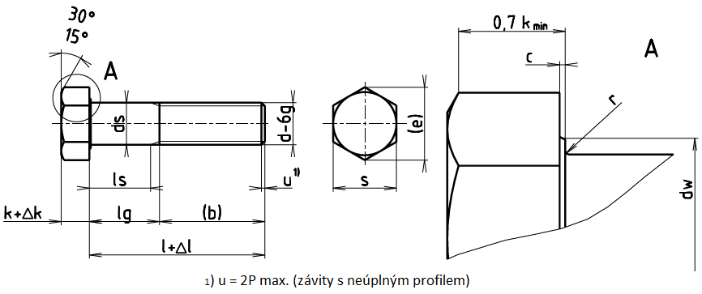

| d×P1) | (M33×2) | M36×3 | (M39×3) | M42×3 | (M45×3) | M48×3 | (M52×4) |
|---|---|---|---|---|---|---|---|
| b3 | 78 | 84 | 90 | 98 | 102 | 108 | 116 |
| b4 | 91 | 97 | 103 | 109 | 115 | 121 | 129 |
| cmax. | 0,8 | 0,8 | 1 | 1 | 1 | 1 | 1 |
| cmin. | 0,2 | 0,2 | 0,3 | 0,3 | 0,3 | 0,3 | 0,3 |
| ds min. | 32,38 | 35,38 | 38,38 | 41,38 | 44,38 | 47,38 | 51,26 |
| da max. | 36,4 | 39,4 | 42,4 | 45,6 | 48,6 | 52,6 | 56,6 |
| dw min. | 46,55 | 51,11 | 55,86 | 59,95 | 64,7 | 69,46 | 74,2 |
| emin. | 55,37 | 60,79 | 66,44 | 71,3 | 76,95 | 82,8 | 88,25 |
| smax. | 50 | 55 | 60 | 65 | 70 | 75 | 80 |
| smin. | 49 | 53,8 | 58,8 | 63,1 | 68,1 | 73,1 | 78,1 |
| k | 21 | 22,5 | 25 | 26 | 28 | 30 | 33 |
| Δk | 0,42 | 0,42 | 0,42 | 0,42 | 0,42 | 0,42 | 0,5 |
| rmin. | 1 | 1 | 1 | 1,2 | 1,2 | 1,6 | 1,6 |
| l | Δl | ls lg5) 6) | (M33×2) | M36×3 | (M39×3) | M42×3 | (M45×3) | M48×3 | (M52×4) |
|---|---|---|---|---|---|---|---|---|---|
| 130 | 2 | ls min. lg max. |
34,5 52 |
||||||
| 140 | 2 | ls min. lg max. |
44,5 42 |
36 56 |
Pro délky ležící nad lomenou čarou se používají šrouby podle ISO 8676 | ||||
| 150 | 2 | ls min. lg max. |
54,5 52 |
46 66 |
40 60 |
||||
| 160 | 2 | ls min. lg max. |
64,5 62 |
56 76 |
50 70 |
41,5 64 |
|||
| 180 | 2 | ls min. lg max. |
84,5 82 |
76 96 |
70 90 |
61,5 84 |
55,5 78 |
||
| 200 | 2,3 | ls min. lg max. |
104,5 102 |
96 116 |
90 110 |
81,5 104 |
75,5 98 |
67 92 |
59 84 |
| 220 | 2,3 | ls min. lg max. |
111,5 129 |
103 123 |
97 117 |
88,5 111 |
82,5 105 |
74 99 |
66 91 |
| 240 | 2,3 | ls min. lg max. |
131,5 149 |
123 143 |
117 137 |
108,5 131 |
102,5 125 |
94 119 |
86 111 |
| 260 | 2,6 | ls min. lg max. |
151,5 169 |
143 163 |
137 157 |
128,5 151 |
122,5 145 |
114 139 |
106 131 |
| 280 | 2,6 | ls min. lg max. |
171,5 189 |
163 183 |
157 177 |
148,5 171 |
142,5 165 |
134 159 |
126 151 |
| 300 | 2,6 | ls min. lg max. |
191,5 209 |
183 203 |
177 197 |
168,5 191 |
162,5 185 |
154 179 |
146 171 |
| 320 | 2,85 | ls min. lg max. |
211,5 229 |
203 223 |
197 217 |
188,5 211 |
182,5 205 |
174 199 |
166 191 |
| 340 | 2,85 | ls min. lg max. |
223 243 |
217 237 |
208,5 231 |
202,5 225 |
194 219 |
186 211 |
|
| 360 | 2,85 | ls min. lg max. |
243 263 |
237 257 |
228,5 251 |
222,5 245 |
214 239 |
206 231 |
|
| 380 | 2,85 | ls min. lg max. |
257 277 |
248,5 271 |
242,5 265 |
234 259 |
226 251 |
||
| 400 | 2,85 | ls min. lg max. |
268,5 291 |
262,5 285 |
254 279 |
246 271 |
|||
| 420 | 3,15 | ls min. lg max. |
288,5 311 |
282,5 305 |
274 299 |
266 291 |
|||
| 440 | 3,15 | ls min. lg max. |
308,5 331 |
302,5 325 |
294 319 |
286 311 |
|||
| 460 | 3,15 | ls min. lg max. |
314 339 |
306 331 |
|||||
| 480 | 3,15 | ls min. lg max. |
334 359 |
326 351 |
|||||